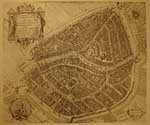
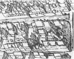
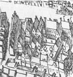
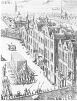

Adelaar in de wolken. De Leidse jaren van Josephus Justus Scaliger 1593-1609
Samenstelling: Paul G. Hoftijzer & Kasper van Ommen
Scaligers Leidse adressen
| 4.1 | Lugdun[um] Batavor[um] = Leyden in Hollant (Leiden: Pieter Bast, 1600). |
|
Kopergravure. 370 x 440 mm. UBL, Collectie
Bodel Nijenhuis. Scaliger bewoonde van 1593 tot 1594 het hoge huis midden in de Schoolsteeg (genoemd naar de nabijgelegen Latijnse school), waarboven het spitsje van een traptoren zichtbaar is. Rechts ervan ligt een inspringend pleintje, naar het schijnt van de straat gescheiden met een poortje. Ook de vleugels langs de twee andere zijden van het pleintje behoorden tot het door Scaliger bewoonde complex. Misschien al vanaf 1594, maar zeker vanaf 1597 bewoonde Scaliger een groot huis aan de Breestraat, thans nummer 111-113, gelegen tegenover de trap van het Stadhuis, met erachter de tuin met vijf bomen. |
|
|  |  |  |
| 4.2 | d’Arminianze Schans tot Leyden, anonieme gravure (Leiden: J. Tangena, tweede |
| helft 17de eeuw), 230 x 340 mm. UBL,
Collectie Bodel Nijenhuis. In 1618 liet de remonstrantsgezinde Leidse magistraat in de Breestraat een houten wering plaatsen ter bescherming van het stadhuis tegen de eigen burgerij, de zgn. ‘Arminiaanse schans’. Op deze prent is ook het huis aan de Breestraat te zien dat door Scaliger meer dan tien jaar is bewoond. Het is het pand met de twee dakkapellen aan de straatzijde, twee huizen rechts verwijderd van het huis met de twee spitse torentjes. |
|
|  | |
| vorige pagina | volgende pagina |